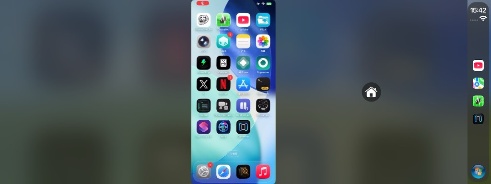
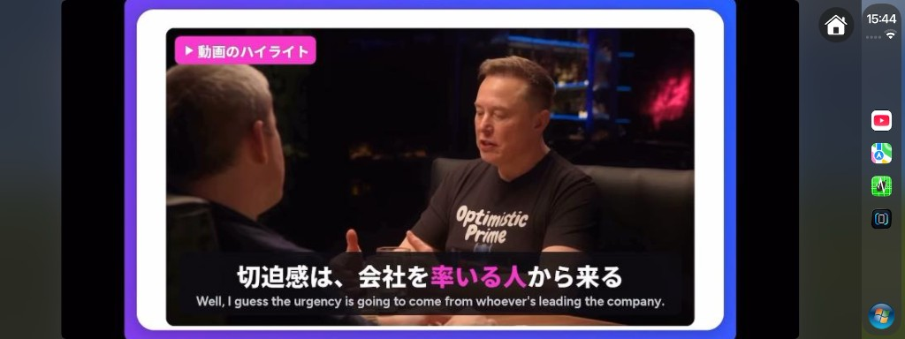

CarPlay Screen Mirror
CarMirror
iPhone の画面を CarPlay にミラーリング。タッチ操作とソフトウェア・ホームボタン付き。
Mirror the iPhone screen to CarPlay with touch control and a software Home button.
iOS 16+
arm64 / arm64e
rootless
ReplayKit
プレビュー
Preview


できること
Features
ReplayKit の画面収録で iPhone 映像を CarPlay に流し、タッチで iPhone を操作します。ソフトウェア・ホームと、ハンドル左右に合わせたボタン配置にも対応。
Streams the iPhone via ReplayKit to CarPlay and lets you control the phone by touch. Includes a software Home button and LHD/RHD placement.
使い方
How to use
1
インストールInstall
Sileo / Zebra から CarMirror を入れ、SpringBoard を再起動。
Install CarMirror from Sileo / Zebra, then respring.
2
画面収録を開始Start broadcast
iPhone の CarMirror アプリで「CarMirror」配信を開始。iOS 16 は CarPlay 接続前に開始してください。
In the CarMirror app, start the “CarMirror” broadcast. On iOS 16, start it before connecting CarPlay.
3
CarPlay で開くOpen on CarPlay
CarPlay で CarMirror を開くと映像が流れます。画面をタッチして操作、ホームボタンでホームへ。
Open CarMirror on CarPlay to see the stream. Touch to control; use Home to go home.
よくある質問
FAQ
脱獄は必要ですか？ Do I need a jailbreak?
はい。rootless（Dopamine など）向けです。ElleKit / MobileSubstrate が必要です。
Yes. Built for rootless (e.g. Dopamine). ElleKit / MobileSubstrate required.
iOS 16 で配信を開始できません Broadcast won’t start on iOS 16
iOS 16 では CarPlay 接続中に ReplayKit を開始できないことがあります。先に CarMirror 配信を開始してから CarPlay に接続し、CarMirror を開いてください。
On iOS 16, ReplayKit may refuse to start while CarPlay is already connected. Start the CarMirror broadcast first, then connect CarPlay and open CarMirror.
映像が出ません / タッチが効きません No video / touch does nothing
配信が「CarMirror」か確認し、一度止めて再開。SpringBoard 再起動後もだめなら、uicache と Broadcast Extension の再認識を試してください。
Confirm the broadcast extension is “CarMirror”, then stop and restart it. After a respring, try refreshing with uicache if the extension is stale.
ホームボタンの位置を変えたい I want to move the Home button
iPhone の CarMirror アプリで「左ハンドル / 右ハンドル」を選べます（デフォルトは左ハンドル）。
In the CarMirror iPhone app, choose Left-hand drive or Right-hand drive (default is LHD).
他の CarPlay アプリ / Tweak
More CarPlay apps / tweaks
対応
Compatibility